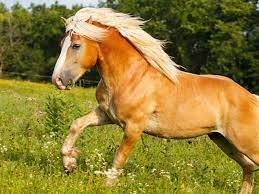
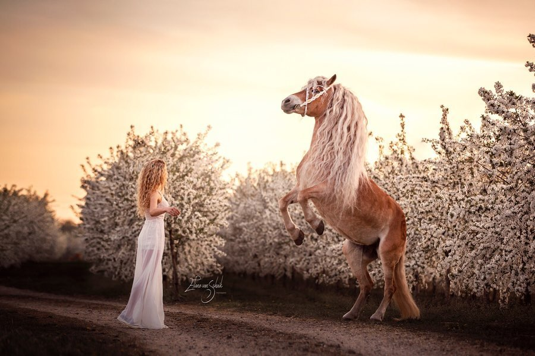

La raza haflinger o avelignese es una raza de caballos desarrollada a finales del siglo XIX en el Tirol. Se trata de un caballo pequeño y robusto muy adaptado a marchar por la montaña. Wikipedia
Nombre científico: Equus ferus caballus
Clasificación superior:
Categoría: Raza de animal doméstico.
Pelaje: Palomino.
Caballo Haflinger.
El Caballo Avelignese o Haflinger es una raza de caballos que debe su nombre a la ciudad de Avelengo, en la provincia de Bolzano, y también aparece en el escudo de la ciudad. En alemán, el pueblo se llama Hafling y el caballo es por lo tanto conocido como Haflinger. Todos los ejemplares Haflingers de Tirol del Sur llevan la marca edelweiss con la letra H en el medio y por eso se les llama a menudo Poni Edelweiss.
Esta raza se distingue por su pelaje saurio, con una cola y melena pálidas (no se debe confundir con el pelaje palomino). Inicialmente seleccionado como animal de carga y trabajo agrícola, en los años sesenta y setenta fue criado principalmente para la producción de carne de caballo; sin embargo, algunos ejemplares también se utilizaron en los picaderos.
Mientras que el semental de la fundación Folie tenía 150 centímetros de altura y sus hijos utilizados para la cría tenían una altura a la cruz entre 139 y 146 centímetros, el promedio del ejemplar Haflinger era más pequeño. De 1925 a 1980 la altura de la cruz en todos los estudios fue en promedio de unos 137 centímetros, Mientras tanto, en la Federación Mundial de Haflinger se aumentó entre 140 a 155 centímetros mediante una selección específica de cría. En la Federación Ecuestre Alemana, los Haflingers pueden tener de 138 a 148 centímetros de altura.
El objetivo de la cría es un cuello bien musculoso pero delgado sin subcuello, una espalda larga con buena profundidad de cinturón y un lomo fuerte, patas con articulaciones secas y pezuñas duras, fuertemente atadas. A veces, una articulación del corvejón débilmente pronunciada con una fuerte angulación de la extremidad se produce como una falla.

El Caballo Avelignese o Haflinger es una raza de caballos que debe su nombre a la ciudad de Avelengo, en la provincia de Bolzano, y también aparece en el escudo de la ciudad. En alemán, el pueblo se llama Hafling y el caballo es por lo tanto conocido como Haflinger. Todos los ejemplares Haflingers de Tirol del Sur llevan la marca edelweiss con la letra H en el medio y por eso se les llama a menudo Poni Edelweiss.
Esta raza se distingue por su pelaje saurio, con una cola y melena pálidas (no se debe confundir con el pelaje palomino). Inicialmente seleccionado como animal de carga y trabajo agrícola, en los años sesenta y setenta fue criado principalmente para la producción de carne de caballo; sin embargo, algunos ejemplares también se utilizaron en los picaderos.
Los caballos Haflinger tienen una cabeza absolutamente y relativamente pequeña y corta, así como noble y seca con una frente amplia y larga. Los ojos son grandes, las fosas nasales anchas y las orejas pequeñas y móviles.
Mientras que el semental de la fundación Folie tenía 150 centímetros de altura y sus hijos utilizados para la cría tenían una altura a la cruz entre 139 y 146 centímetros, el promedio del ejemplar Haflinger era más pequeño. De 1925 a 1980 la altura de la cruz en todos los estudios fue en promedio de unos 137 centímetros, Mientras tanto, en la Federación Mundial de Haflinger se aumentó entre 140 a 155 centímetros mediante una selección específica de cría. En la Federación Ecuestre Alemana, los Haflingers pueden tener de 138 a 148 centímetros de altura.
El objetivo de la cría es un cuello bien musculoso pero delgado sin subcuello, una espalda larga con buena profundidad de cinturón y un lomo fuerte, patas con articulaciones secas y pezuñas duras, fuertemente atadas. A veces, una articulación del corvejón débilmente pronunciada con una fuerte angulación de la extremidad se produce como una falla.
El nombre de Haflinger viene del pueblo Hafling en el Tirol del Sur. La expresión italiana "Avelengneser" también proviene de este pueblo, porque el fascista Ettore Tolomei nombró a Hafling como Avelengo durante el período de italianización. Estos dos nombres han permanecido con el caballo hasta hoy.
Linajes de sangre
Los linajes de sangre se utilizan para sistematizar la población reproductora y proporcionar información sobre las relaciones en el pedigrí de un caballo. El caballo Haflinger es criado exclusivamente en crianza pura y su linaje de sangre siempre está marcado en su nombre con la letra inicial del semental.
El fundador del linaje Haflinger proviene de una refinada yegua de campo del granjero Folie, que vivió en Schluderns en el valle de Vinschgau, y del semental oriental El Bedawi XXII: Folie 249, nacido en 1874. A partir del 249 Folie, que representa la primera generación en las tablas de pedigrí de sementales, hay básicamente 7 linajes de sangre en la cría del Haflinger hoy en día. Estos son los linajes A, B, S, M, N, ST, W, en las que los linajes B, M y S se consideran las más débiles en términos de calidad y cantidad.